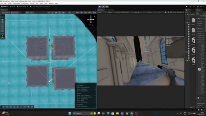

Advanced Zombie AI
8-state enemy AI with tiered sound detection, squad alerting, player memory, and dynamic music crossfade. Built so the zombie isn't just chasing you it remembers where you were, and it told its friends.
8
AI States
~1200
Lines (Core)
6
Companion Scripts
5
Sound Priorities
"One zombie spots you. The whole room knows immediately. No sound. No warning. Just convergence."
Advanced Zombie AI Squad Alert System
The 8 States
Idle
Patrol
Chase
Standoff
Search
Attack
Feeding
Dead
The details that make it feel right
A wounded zombie (health below 50) locks into Chase permanently you can't shake it. The Linger state keeps it near your last known position for 20 seconds with sharper senses, so hiding in the same spot twice doesn't work. Standoff is just the zombie staring at where it thinks you are. And Feeding gives them something to do when you're not around they feel like they exist even when you're not looking.
Squad Alerting
When one zombie spots you, Physics.OverlapSphere fires ReceiveSquadAlert() on nearby zombies and forces them straight into Chase no sound, no animation, no warning. You don't see it happen. You just notice they're all coming at once.
Death
On death, isKinematic is disabled across all rigidbody components and a directional impulse is applied based on the hit vector. Zombies fall convincingly away from the source of damage.
AI in Action

Sprint detected. The zombie abandons patrol and moves toward the sound source priority 2 on the alert bus.

Distraction thrown from range. The zombie breaks patrol and navigates to the alert position.

Close distraction. Larger search radius generated the zombie sweeps the area before returning.

Feeding state. The zombie exists between encounters. Torch detection active intensity falls off by distance and angle.

Ragdoll death. Directional impulse applied on hit vector the zombie falls away from the damage source.
Detection
- Sight: two raycasts per frame one to torso, one to head. Either clear = visible. Torch detection uses a cone with an obstacle linecast and falls off by distance and angle.
- Sound: every sound source writes into
pendingAlertPriorityandpendingAlertPos. Update() reads them once per frame. Priority order: Walk → Sprint/Landing → Distraction → Gunshot → Explosion. - Ground vibration goes direct via OverlapSphere can't be blocked by walls, ignores the sound bus entirely.
Search & Memory
- BeginSearch() generates NavMesh-validated waypoints more of them, wider spread, if the zombie was in a high-confidence chase.
- Three anti-stuck layers: per-frame distance accumulator, 8s waypoint timeout, 12s total search cap. It doesn't just stand there.
- ScanPauseAtWaypoint() stops the agent mid-path and rotates it 45° left and right. Looks like it's actually checking the room.
- LKP snaps on the exact frame sight is lost so the position it remembers is always the freshest one.
Music
ZombieMusicManager counts active chasers. Chase music kicks in above the threshold (5 zombies). There's a 2.5s grace period before it fades back out enough time that it doesn't stutter if you immediately re-engage.
Finite State Machine8 states, guarded ChangeState(), re-entry prevention
NavMesh PathfindingDynamic destinations, SamplePosition validation
Event ArchitectureStatic C# event bus, zero inspector wiring
Priority ArbitrationUnified alert slot, enum-based priority
Physics QueriesLinecast, OverlapSphere, per-LayerMask
Coroutine ManagementGuarded exit paths, state restoration
Memory SystemLKP snap on sight-loss, expiry logic
Ragdoll PhysicsDirectional force, isKinematic toggling